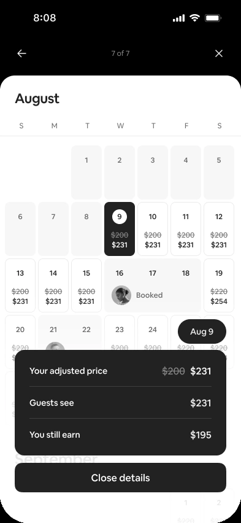

2 of 7
3 of 7
4 of 7
Guests pay a service fee
on top of the price you set.
on top of the price you set.
And a host service fee is
deducted from your earnings.
deducted from your earnings.
To make pricing simpler, we’re
combining these into one fee.
combining these into one fee.

Service fee $3
Single fee 15.5%
Single fee $18
You earn $97
Your price $100
Your price $115


